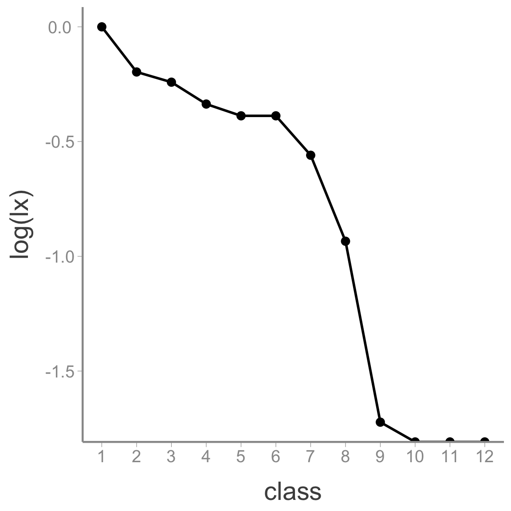

Lab 4: Creating and interpreting a life table
WILD3810: Plant and animal populations
Spring 2019
life_table.RmdIn this lab, you will use the birth and death information you collected last week at the cemetery to develop a life table to citizens of Logan, UT. Rather than build a single life table using all of the data, you will divide the data into smaller groups based on each individual’s sex and the time period that they lived. This will allow you to learn about how patterns of survivorship differ between males and females and how those patterns have changed over time.
This lab will help get you started on how to build the life table from the cemetery data. You will then complete the exercise as part of this week’s homework assignment. If you complete the entire assignment during lab, that is fine. Otherwise, you will need to complete the assignment on your own.
Objectives
Build a static life table from birth and death information
Explore how patterns of survivorship differ among males and females
Explore how patterns of survivorship have changed across time
Practice subsetting data frames in
Rusingdplyr::filter()and bracket notationPractice adding data to a data frame using
dplyr::mutate()andforloopsPractice vizualing data using
ggplot2
Setting up the lab
In order to organize your code and files for this homework assignment, start by creating a new project:
Open
RStudioClick
File -> New Project
- Click
New Directory

- Click
New Project
- Name the project
life_tableand create it within yourWILD3810folder (clickBrowseand navigate to this folder if necessary)

Click
Create projectClick
File -> New File -> R Markdown
- Select
From Template; scroll down and selectWILD3810-Homework4

- In the
Namebox, typeLastnameFirstName-Homework4
Click
OkMake sure you have the most update-to-date version of
WILD3810by running:
install.packages("devtools", dependencies = TRUE)
devtools::install_github("RushingLab/WILD3810")Note: You will use the homework 4 template to complete the rest of this lab activity. You can copy the code below to your assignment template to start the assignment. However, you do not need to copy code the prints objects, only the code the creates or manipulates the objects.
Reading in the data
All of the birth and death data you collected last week has been compiled and included as a data frame in the WILD3810 package. Assuming you have an up-to-date version of the package, you can read the data by copying the following lines to the first chunk in your homework 4 template (note, you do not need to copy the head(lt_data) line to your homework):
| byear | dyear | sex |
|---|---|---|
| 1834 | 1905 | Male |
| 1871 | 1958 | Male |
| 1822 | 1916 | Male |
| 1875 | 1965 | Male |
| 1859 | 1874 | Male |
| 1866 | 1905 | Male |
Adding age at death
The head() function shows the first 6 rows the lt_data object, allowing us to see that there are 3 columns:
byear: The birth year of each individualdyear: The death year of each individualsex: Whether the entry corresponds to a male or female
To build the life table, we will need at least one more piece of information \(-\) age at death. We can roughly estimate age at death as dyear - byear (for the most accurate ages we would want to include day and month in this calculation but just using year will be accurate enough for our purposes).
Fortunately R makes it easy to calculate age at death with a single line of code. Remember that the dplyr function mutate is used to add a new column to a data frame. We give mutate the name of the data frame we want to add a column to, the name of the new column, and the values for the new column.
Copy the following line of code into your homework 4 file and the complete it to create the new variable:
Checking the data for accuracy
It is almost assured that mistakes will occur during data entry \(-\) typos are an inevitable part of transfering data from field sheets to digital files. Whenever you are working with raw data, you should always check the data to see if there are any obvious mistakes. For example, we know that age at death has to be a positive number. Use the following code to make a histogram of the age data and see if there are any negative values:
hist(lt_data$age)Oops, looks like there are a few negative values. These are most likely due to typos in the data entry \(-\) for example entering 1952 instead of 1852 for the birth year. At this stage, we have two options: modify the correct entries or remove them. To modify the entries, we need to be very sure that we know the correct values or else we just creating a different type of “wrong” data. Because we have a lot of data to work with (removing 3 entries won’t have a big impact on our conclusions), we will simply remove the individuals with negative ages. To that, we’ll use our old friend filter(). Copy the following line into your homework and complete the missing arguments:
lt_data <- filter(lt_data, )Subsetting the cohorts
One purpose of this lab is to examine how survivorship differs between males and females and how survivorship has changed over time. That means we need to subset the data frame to create new data frames that contain only the demographic data for the individuals in each cohort.
To look at changes over time, we’ll divide the data into individuals that died before 1901, individuals that died between 1901 and 1945, and individuals that died after 1945. For each of these time periods, we’ll look at the data for males and females separately. To make the subsetting easier, let’s create a vector with the cutoff years for each cohort. Copy the following code into your homework file:
cohort <- c(1900, 1945)Now we can create new data frames, one for each group, using the filter function. For example, we can subset the data for females that died before 1901 using:
f1 <- filter(lt_data, sex == "Female" & dyear <= cohort[1])Make sure you understand what this function is doing. filter requires the original data frame we want to filter, in this case lt_data. Then we provide conditional statements (statements that return TRUE or FALSE for each individual) that determine how we want to filter the data. In this case, we want females (sex == "Female". Remember that when you ask R is something is equal to something else you need to use the double equal signs!) and (&) death year less than 1901 (dyear <= cohort[1]). Remember that cohort[1] will return the first value of the cohort object, in this case 1900. We can death years that are less than or equal to (<=) this value.
In your homework assignment file, modify the above to create data frames called f2, f3, m1, m2, and m3 that contain the demographic data for males and females from the other cohorts.
Building a life table
Now you’re ready to build a life table for each group. This lab document will walk you through building a life table for the a single cohort. You will then make the remaining life tables on your own.
We will start by making an empty life table and then filling in the correct values for each column. This data frame needs to define the age classes for the life table and contain the appropriate life table columns. For this analysis, we’ll use 10-year age classes (e.g., 0-9, 10-19, 20-29, etc) and define separate columns for the minimum and maximum age the correspond to each row:
lt_f1 <- data.frame(sex = "Female",
cohort = "pre-1900",
class = seq(1:12),
min.age = seq(from = 0, to = 110, by = 10),
max.age = seq(from = 9, to = 119, by = 10))
lt_f1| sex | cohort | class | min.age | max.age |
|---|---|---|---|---|
| Female | pre-1900 | 1 | 0 | 9 |
| Female | pre-1900 | 2 | 10 | 19 |
| Female | pre-1900 | 3 | 20 | 29 |
| Female | pre-1900 | 4 | 30 | 39 |
| Female | pre-1900 | 5 | 40 | 49 |
| Female | pre-1900 | 6 | 50 | 59 |
| Female | pre-1900 | 7 | 60 | 69 |
| Female | pre-1900 | 8 | 70 | 79 |
| Female | pre-1900 | 9 | 80 | 89 |
| Female | pre-1900 | 10 | 90 | 99 |
| Female | pre-1900 | 11 | 100 | 109 |
| Female | pre-1900 | 12 | 110 | 119 |
Here, we use the seq() function to create a sequence of numbers corresponding to either the minimum or maximum age for each class. We also use the by argument to tell the function to make the sequence by 10’s (i.e., 0, 10, 20, etc.). We also add columns to keep track of which group this life table corresponds to.
As we learned in lecture, the static life table starts with three main columns:
\(\large a_x\) - the number of deaths within each age class
\(\large N_x\) - the number of individuals that start out alive in each age class
\(\large l_x\) - the proportion of individuals surviving to each age class
We will use mutate to add empty columns for each of these variables to the life table:
lt_f1 <- mutate(lt_f1, ax = integer(length = nrow(lt_f1)),
Nx = integer(length = nrow(lt_f1)),
lx = numeric(length = nrow(lt_f1)))
lt_f1| sex | cohort | class | min.age | max.age | ax | Nx | lx |
|---|---|---|---|---|---|---|---|
| Female | pre-1900 | 1 | 0 | 9 | 0 | 0 | 0 |
| Female | pre-1900 | 2 | 10 | 19 | 0 | 0 | 0 |
| Female | pre-1900 | 3 | 20 | 29 | 0 | 0 | 0 |
| Female | pre-1900 | 4 | 30 | 39 | 0 | 0 | 0 |
| Female | pre-1900 | 5 | 40 | 49 | 0 | 0 | 0 |
| Female | pre-1900 | 6 | 50 | 59 | 0 | 0 | 0 |
| Female | pre-1900 | 7 | 60 | 69 | 0 | 0 | 0 |
| Female | pre-1900 | 8 | 70 | 79 | 0 | 0 | 0 |
| Female | pre-1900 | 9 | 80 | 89 | 0 | 0 | 0 |
| Female | pre-1900 | 10 | 90 | 99 | 0 | 0 | 0 |
| Female | pre-1900 | 11 | 100 | 109 | 0 | 0 | 0 |
| Female | pre-1900 | 12 | 110 | 119 | 0 | 0 | 0 |
Both the integer and numeric functions create empty vectors that can store either integer values or numeric values. We need to tell R how long those vectors are using the length argument. In this case, we know the length of the vectors needs to equal the number of rows in the data frame.
Now we’re ready to fill in the values for each column. The first values of \(N_x\) and \(l_x\) are relatively straightforward. We know that the f1 dataframe contains one row for each individual in the cohort. That means that we start with nrow(f1) individuals:
lt_f1$Nx[1] <- nrow(f1)We also know that \(l_1\) always equals 1:
lt_f1$lx[1] <- 1How do we fill in \(a_1\)? We need to know how many individuals died between the ages of 0 and 9. There are many ways to estimate this but we’ll use a combination of two functions you are already familiar with: filter() and nrow.
First, we can filter the f1 data frame to contain only individuals that died between the ages of 0 and 9. Instead of writing 0 and 9 by hand, we’ll use the min.age and max.age columns in the data frame (you’ll see why in a minute):
filter(f1, age >= lt_f1$min.age[1] & age <= lt_f1$max.age[1])| byear | dyear | sex | age |
|---|---|---|---|
| 1864 | 1864 | Female | 0 |
| 1873 | 1874 | Female | 1 |
| 1871 | 1871 | Female | 0 |
| 1895 | 1896 | Female | 1 |
| 1871 | 1878 | Female | 7 |
Now many individuals is this? Since there is one row each individual, nrow() will give us the correct number. We can nest the filter() function inside of nrow() to get the number of individuals with a single line of code:
Now let’s think through how to get the second row filled in. Do not copy this code into your homework. We’ll use this to think through how to fill in the remaining years, then create a more automated way of completing these tasks.
We know that \(N_2 = N_1 - a_1\) (the number of individuals that survive to the second age class is equal to the number that started in age-class 1 minus the individuals that died while in the first age-class). So:
lt_f1$Nx[2] <- lt_f1$Nx[1] - lt_f1$ax[1]We also know that \(l_2 = \frac{N_2}{N_1}\), so:
lt_f1$lx[2] <- lt_f1$Nx[2]/lt_f1$Nx[1]And:
We could copy these lines for each age class (2,3,…,12) and change the index number each time. But that’s a lot of work and we’ll probably make mistakes. So instead, we’ll use a for loop:
for(i in 2:nrow(lt_f1)){
## Nx for class i as a function of Nx and ax in the previous class
lt_f1$Nx[i] <- lt_f1$Nx[i-1] - lt_f1$ax[i-1]
## lx for class i as a function of Nx[i] and Nx[1]
lt_f1$lx[i] <- lt_f1$Nx[i]/lt_f1$Nx[1]
## ax for class i based on the min.age and max.age values in row i
lt_f1$ax[i] <- nrow(filter(f1, age >= lt_f1$min.age[i] & age <= lt_f1$max.age[i]))
}
lt_f1| sex | cohort | class | min.age | max.age | ax | Nx | lx |
|---|---|---|---|---|---|---|---|
| Female | pre-1900 | 1 | 0 | 9 | 5 | 28 | 1.0000 |
| Female | pre-1900 | 2 | 10 | 19 | 1 | 23 | 0.8214 |
| Female | pre-1900 | 3 | 20 | 29 | 2 | 22 | 0.7857 |
| Female | pre-1900 | 4 | 30 | 39 | 1 | 20 | 0.7143 |
| Female | pre-1900 | 5 | 40 | 49 | 0 | 19 | 0.6786 |
| Female | pre-1900 | 6 | 50 | 59 | 3 | 19 | 0.6786 |
| Female | pre-1900 | 7 | 60 | 69 | 5 | 16 | 0.5714 |
| Female | pre-1900 | 8 | 70 | 79 | 6 | 11 | 0.3929 |
| Female | pre-1900 | 9 | 80 | 89 | 5 | 5 | 0.1786 |
| Female | pre-1900 | 10 | 90 | 99 | 0 | 0 | 0.0000 |
| Female | pre-1900 | 11 | 100 | 109 | 0 | 0 | 0.0000 |
| Female | pre-1900 | 12 | 110 | 119 | 0 | 0 | 0.0000 |
Hopefully now you see why we didn’t hard code the age class values when calculating \(a_x\)! By using the min.age and max.age columns, we can change the values in each loop instead of having to type them by hand each time.
Visualizing the survivorship curve
With the life table created, we can use ggplot2 to plot the survivorship curve for this cohort. Add the following line to the first figure chunk in your homework assignent (look for the chuck that says Enter figure code here):
ggplot(data = lt_f1, aes(x = class, y = log(lx))) +
geom_line(size = 1) +
geom_point() +
scale_x_continuous(breaks = seq(from = 1, to = 12, by = 1))
Notice that we can convert \(l_x\) into \(log(l_x)\) within the ggplot function.
Completing the assignment
Use the code created above to complete the assignment for the remaining groups. You will be able to copy and reuse most of the code above, just be careful to go through and change the names of objects and any parts of the code that refer to specific cohort attributes (male/female, dates, etc.).
When you have completed the assignment, upload the .html and .Rmd files to Canvas.